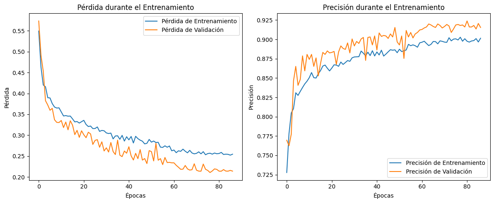
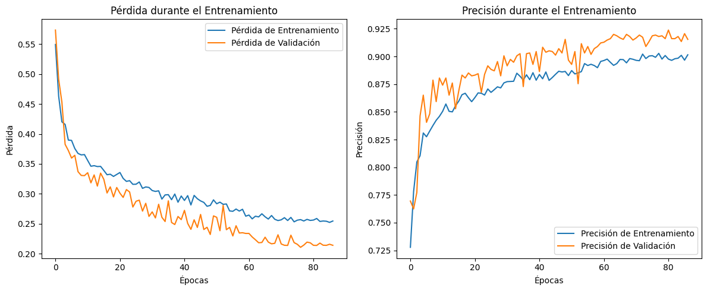

Métricas
En esta sección se presentan las métricas de desempeño del modelo de clasificación de exoplanetas basado en los datos del telescopio Kepler. Estas métricas son fundamentales para evaluar la precisión y eficacia del modelo en la identificación de exoplanetas.
 
